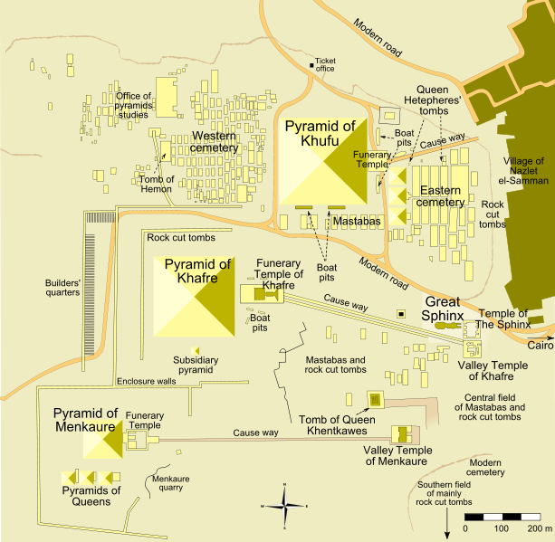

VoyagerVault
Let's Find Where You Wanna Travel Next!
"The world is a book, and those who do not travel read only one
page."
- Saint Augustine
Destinations
Find Your Adventure in.. Categories
Your Favorite Season?
Today's Feature
The Great Pyramid of Giza
The Great Pyramid of Giza is the largest Egyptian pyramid and
served as the tomb of pharaoh Khufu, who ruled during the Fourth
Dynasty of the Old Kingdom. Built in 2600 BC, over a period of
about 27 years, the pyramid is the oldest of the Seven Wonders of
the Ancient World, and the only wonder that has remained largely
intact.

Initially standing at 146.6 metres (481 feet), the Great Pyramid
was the world's tallest human-made structure for more than 3,800
years.
Popular Attractions
Antelope Canyon | Aquarium of the Pacific | Xcaret | British Museum | San Diego Zoo Safari Park | London Natural History Museum | Xplor Park | Stonehenge | Öresund Bridge | Distillery Historic District | El Yunque National Park | Chichen Itza | Machu Picchu | Hoover Dam | Teotihuacan | Gondola Rides at the Venetian | Bioluminescent Bay (Mosquito Bay) | Arch of Cabo San Lucas (El Arco) | Molokini Crater | Mauna Kea Summit & Observatory
Popular Cities
Things to do in Mumbai | Things to do in Chicago | Things to do in Houston | Things to do in San Diego | Things to do in Atlanta | Things to do in Hyderabad | Things to do in Las Vegas | Things to do in Miami | Things to do in Pune | Things to do in Dallas | Things to do in New Orleans | Things to do in San Antonio | Things to do in San Francisco | Things to do in Delhi | Things to do in Austin | Things to do in Boston | Things to do in Rome | Things to do in Los Angeles | Things to do in Myrtle Beach | Things to do in Philadelphia | Things to do in Paris | Things to do in Lucknow | Things to do in Phoenix | Things to do in London | Things to do in Tampa | Things to do in Florence | Things to do in Oahu | Things to do in Key West | Things to do in New York City | Things to do in Maui | Things to do in Arizona | Things to do in Barcelona | Things to do in Florida | Things to do in Lisbon | Things to do in Washington DC |